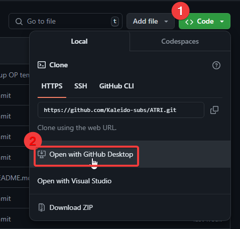

Setting up Git
Warning
This guide assumes the reader to be a Windows user, however most of the information found here can still be used Linux/MacOS users, as well as users who prefer to use git directly through the terminal.
When working in a group, you'll often find multiple people making changes to the same or multiple files. The Translator will need a place to upload their translation to, the typesetter(s) may need a place where they can upload their typesetting, etc.
For this kind of operation, a git environment is preferable. With git you can very easily do version control, allowing you to see who made changes to what files and when, and also create an easy place to find all the relevant files and their contents without requiring users to blindly download files to edit them the same way they would when working in an FTP setup.
Using the Kaleido project template
Most projects are structured the same or very similarly. Because of this, we at Kaleido have created our own project template. This template is updated regularly.
You can use this template by pressing this button in the top-right corner of the page:
This will open the following page:

Give your repository a name, create it under your own username or an organisation you have writing to, and decide whether to make the repository public or private. You can then create the repository by clicking the "Create repository" button.
Adding users
If you're working with multiple people, you'll want to make sure to give them access to the repository. To do this, navigate to the repository's settings, and then click on "Collaborators".
Here you can manage what users (and teams in an organization) have access to in your repository. When inviting project staff, make sure to give them writing access.
Basic actions
If you are new to Git and GitHub, it's recommended to use the GitHub Desktop client. This guide was written under the assumption that most readers will be using this client.
Cloning
After installing the desktop client,
open it and log in.
Now you need to add the repository to your system.
You can do this by going to File > Clone repository,
or by opening the repository in your browser
and going to Code > Open with GitHub Desktop.

Syncing file changes
When editing files from a git repository, git will remember and verify what files have been changed. Before making any commits however, you’ll want to first double-check that you have every file pulled to your local repository. Click "Fetch origin" at the top, and pull in any newly-pushed commits made by other users.
Now you can verify your own changes and commit the files you want to upload/update in the repository. The desktop client will additionally give you a very useful display of what is different between your file and the latest version of the file you pulled in from the repository.
To make things easier for your teammates,
you’ll want to make sure to give your commit
a helpful title,
as well as a description if necessary.
An example of a helpful commit title
would be an episode number
and what you did in the commit.
For example, 03: Typeset train sign
or 08: Edited Part A.
The description can contain
more detailed information,
like what exactly was changed
(if multiple things were changed),
what problems you ran across along the way,
etc.